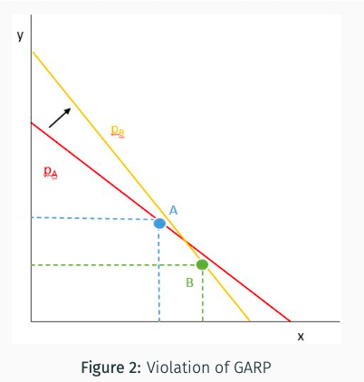
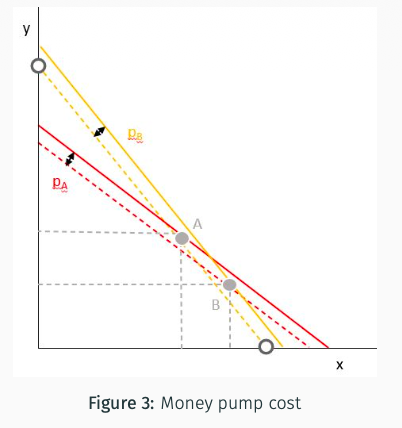
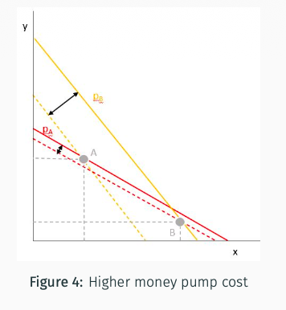

5. Consumer’s Choices: Revealed Preferences
From observed choices to WARP, SARP and GARP, followed by the money-pump example and experimental applications.
Chapter 4 starts from preferences and imposes assumptions on them. Here we work in the other direction: observe what the consumer chooses when other bundles are affordable, then ask whether these choices can come from one stable preference relation.
Let $(x_1, x_2)$ and $(y_1, y_2)$ be two bundles, and $(p_1, p_2)$ be the prices, such that:
What can you infer about this consumer’s preferences?
She bought $x$, and $y$ would have cost no more than $x$ at those same prices. She could therefore have bought $y$ instead. Assuming that she chooses a most preferred affordable bundle, her choice tells us:
Reading the expenditure comparisons. The expression $p\cdot x=p_1x_1+p_2x_2$ is the total cost of bundle $x$: multiply each quantity by its price, then add the costs. When comparing $x$ and $y$, use the same prices for both. Later, $(p^k,x^k)$ denotes observation $k$: the prices faced and the bundle chosen. The comparisons below use observed expenditure as the budget.
$(x_1, x_2)$ is revealed preferred to $(y_1, y_2)$ iff:
$(x_1, x_2)$ is strictly revealed preferred to $(y_1, y_2)$ iff:
The previous intuition relies on the assumption that the consumer is always choosing the most preferred bundle she can afford, i.e. maximizing her utility.
What kind of observation would lead us to conclude that the consumer is not following the utility-maximizing model?
If choices are unique, choosing distinct bundles $x$ and $y$ while both are affordable on both occasions is inconsistent: each choice would have to be strictly better than the other. If utility maximization allows ties, however, mutual affordability alone need not be a contradiction. This distinction matters when we compare WARP and GARP.
The premise says that $y$ was affordable when $x$ was chosen. The conclusion says that $x$ must be outside the expenditure budget when $y$ is chosen. Equivalently, the reverse inequality $q\cdot y\geq q\cdot x$ is forbidden.
WARP checks consistency between two observed choices. We use the convention for unique choices: even equality in the reverse expenditure comparison is excluded when $x\neq y$.Starting point: The same strictly quasiconcave utility function $u$ is maximized on each convex budget set, and the observed maximizers exist.
Goal: For $x\neq y$, show that $p\cdot x\geq p\cdot y$ implies $q\cdot y<q\cdot x$.
Does satisfying WARP guarantee utility rationalization?
Under standard consumer-demand assumptions:
- Yes, if there are only two goods ($n = 2$).
- Not in general with three or more goods ($n \geq 3$).
How must we strengthen WARP to obtain a theory of revealed preference that is equivalent to the theory of utility maximization?
WARP tests pairs directly. With more goods, a chain can return to its starting bundle without any pair violating WARP. SARP rules out these longer cycles between distinct bundles; GARP allows indifference while excluding cycles with a strict revealed comparison.
$(x_1, x_2)$ is directly revealed preferred to $(y_1, y_2)$ ($X \text{ DRP } Y$) iff:
SARP applies the logic of WARP to an entire chain. The starting bundle must be unaffordable at the end, so the chain cannot close into a cycle between distinct bundles.
Relation to WARP: SARP includes the pairwise consistency required by WARP and extends it to comparisons connected through intermediate choices.If:
Starting point: Each $x^k$ maximizes the same locally non-satiated utility $u$ in its observed expenditure budget, with positive prices $p^k$.
Goal: Given a chain from $x^1$ to $x^K$, prove $p^K\cdot x^1\geq p^K\cdot x^K$.
- A finite dataset $D$ satisfies GARP.
- A finite dataset $D$ can be rationalized by a locally non-satiated utility function.
- A finite dataset $D$ can be rationalized by a continuous, concave, and strictly monotone utility function.
Since $110<125$, $B$ was strictly cheaper. Thus $A$ is strictly revealed preferred to $B$.
Next, the consumer chooses $B$ at prices $p_B=(14,12)$:
Since $130<136$, $A$ was strictly cheaper on this occasion. Hence $B$ is strictly revealed preferred to $A$. The cycle has strict comparisons, so GARP is violated.

The graph illustrates the two budget lines ($p_A$ in red, $p_B$ in yellow) and bundles $A$ and $B$, showing the revealed-preference cycle.

The graph illustrates the monetary cost associated with the revealed-preference inconsistency (dashed budget lines).

The higher the money-pump cost (wider gap between budget lines), the more severe the violation of rationality.
Each expenditure difference is nonnegative. If at least one is strictly positive, the cycle violates GARP and its money-pump cost is positive:
For positive total expenditure, dividing by what was spent across the observations makes costs comparable across different spending levels:
In the two-bundle example:
Application in the course: About 80% of households violate GARP at least once, while the reported average cost is around 6% of food expenditure. Violations can therefore be frequent yet economically small. Their size matters alongside their number.
These applications use the same distinction: a preference describes what someone values; a revealed-preference test asks whether their choices are consistent with those values.
Design. Participants allocate a budget between their own payoff $\pi_o$ and a stranger’s payoff $\pi_s$. The price of their own payoff is normalized to 1; the price $p_s$ of the stranger’s payoff varies. Each decision therefore reveals a choice from a different budget.
Result. About 10% violate WARP or GARP; about 90% pass. Several familiar utility functions describe patterns observed among the participants:
The first values only one’s own payoff. The second values equal payoffs: increasing only the larger payoff leaves the minimum unchanged. The third values total payoff: allocate to the stranger when $p_s<1$, to oneself when $p_s>1$, and any split is optimal when $p_s=1$.
Lesson: Caring about another person can be consistent with rational choice. Rationality does not require selfishness.A violation is a mistake if the person would have avoided it had they understood that it contradicted an axiom they wanted to follow.
Design. Participants first decide whether to let an axiom-based algorithm guide their choices. They then make choices and are shown inconsistencies. They can revise their choices, stop using the algorithm, or leave both unchanged.
Results. Around 85% initially want an axiom to guide their choices. When shown inconsistencies, 47% revise their choices, 13% stop using the algorithm, and 40% change neither.
Lesson: Some observed violations reflect errors that people wish to correct. An axiom may therefore remain useful as a guide even when it does not describe every observed choice.The CCEI measures how much the expenditure comparisons must be relaxed to remove GARP violations. It ranges from 0 to 1. A score of 1 means that the original observations satisfy GARP; a score close to 1 means that only a small adjustment is needed.
To understand the adjustment, imagine reducing the spending threshold used to decide which alternatives count as affordable. Fewer alternatives then enter the revealed-preference comparisons, which can remove an inconsistency. A score of 0.9 corresponds to a 10% relaxation of those comparisons. The observed choices stay fixed: the adjustment concerns the consistency test.
Results. In the course’s sample of children and undergraduates, about 25% of seven-year-olds, 60% of eleven-year-olds and 65% of young adults have no GARP violations. Yet CCEI is around 0.95 in all three groups.
Lesson: The frequency of violations differs across ages, while their economic size can remain small. Counting violations and measuring their severity answer different questions.Design. A sample of 1,182 individuals makes 25 allocation decisions under risk. Choice consistency is measured using CCEI.
Results. The reported efficiency gaps are about 3.3 percentage points for lower-income participants, 2.6 for less-educated participants, and 5.1 for older participants, relative to their respective comparison groups.
Lesson: Consistency varies across individuals and is associated with socioeconomic characteristics. These comparisons describe associations; they do not by themselves establish why the differences arise.- How to link preferences and utility functions: is a preference representable by a utility function?
- How to link utility functions and choice rules: are observed choices rationalizable by some utility function?
- How to link preferences and observed choices: using the concept of revealed preferences.